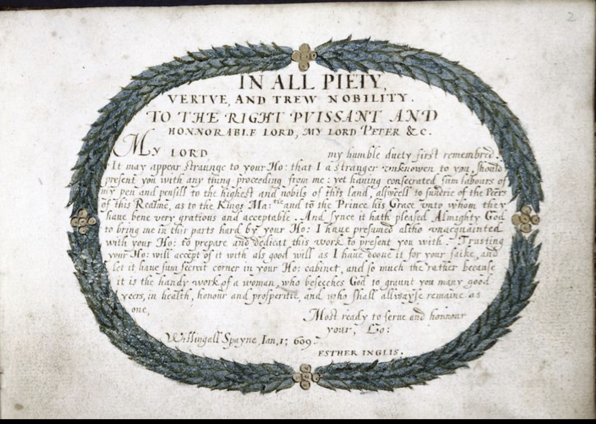
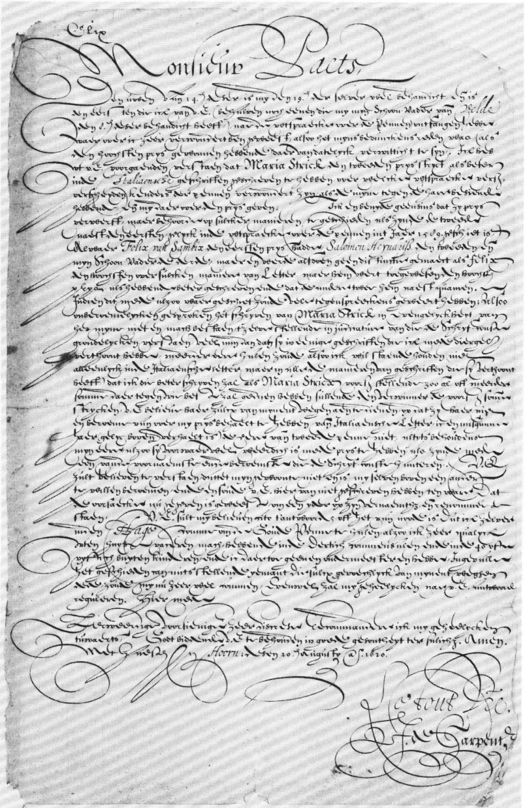

Eine neue Studie vom 08. März 2025 zeigt das mehr frauen als gedacht an dem abschreiben mittelalterlicher und früh moderner Manuskripte beteiligt waren. Für diese Studie schaute man sich den Benedictine Kolophone Catalogue an. Dieser enthält 23774 Manuskripte aus der Römisch Katholischen Region Europas um 800 bis 1626 n chr.. Die Analyse der Namen Orte und Daten die in den Manuskripten zu finden waren ergab das um die 1.1 Prozent der 10 Millionen Manuskripte die in der zeit Produziert wurden von Frauen abgeschrieben wurden. Die Dunkelziffer wird wohl deutlich höher sein. (https://www.nature.com/articles/s41599-025-04666-6#Ack1) Ein weiteres Indiz dafür, dass Frauen schon um 1000-1600 also Schreiberinnen gearbeitet haben, ist ein untersuchtes Gebiss einer Frau aus dieser Zeit. In dem Gebiss fand man Partikel des seltenen Gesteins lapis lazuli dessen Pigment für sie Anfertigung Hochwertiger Manuskripte genutzt wurde. Dies deuten nicht nur darauf hin das diese Frau als Schreiberin arbeitete sondern auch das sie eine sehr gut ausgebildete Schreiberin war die sich an der Anfertigung der Wertvollsten Manuskripte Beteiligte. (https://www.newscientist.com/article/2189990-medieval-dental-plaque-suggests-women-played-important-role-as-scribes/)

Um die Rolle der Frau als Schreibmeisterin zu erschließen, muss sich zunächst die Lage der Frauen und Mädchenbildung im 16. und 17. Jahrhundert erörtert werden können. Genauer, die Frage wann Frauen überhaupt Lesen und schreiben lernen durften. Das Aufkommen von writing Manuals oder copy books, änderte die art und weise wie schreiben gelernt wurde. Diese Bücher wurden von writing masters geschrieben und man konnte deren arbeiten kopieren. Also eine art schreib-lern-heft. In England kamen diese copy books ende des 16. jh auf. (Seite 21) Im 16. und 17. Jahrhundert gab es ein paar öffentliche Schulen in denen Mädchen unter anderem, neben anderen fächern die für die ausbildung einer Hausfrau wichtig sind, auch das lesen und schreiben lernen konnten. Für adelige oder Mädchen aus der Oberschicht gab es auch die Möglichkeit von Tutoren zuhause unterrichtet zu werden oder auf private Schulen zu gehen. Einige wurden auch von ihren verwandten in lesen, schreiben und Hauswirtschaft unterrichtet (s. 24-25) Es gab jedoch eine große Debatte darüber ob frauen des 16. und 17. jh das lesen und schreiben lernen sollten. So schrieb Daniel tuvil in Asylum Veneris, Or a Sanktuare for ladies (london, 1616) das viele Mädchen nicht schreiben lernen durften da das schreiben ihre ; „virgine Chastitie … by venting foorth those amarous passions, that are incident to Rotter Blonds“ bedrohen würden. In dem buch argumentiert er dafür das Mädchen und frauen lesen und schreiben lernen sollten.
https://archive.org/details/bim_early-english-books-1475-1640_asylum-veneris-_tuvil-daniel_1616/page/n91/mode/2up
Auch Martin billingsley argumentiert in seinem buch the Penns excellence dafür das Frauen schreiben lernen sollten, jedoch nicht gerade auf feministische art und weise. Einerseits merkt er an, das Witwen umbedingt dem lesen und schreiben mächtig sein sollten. Außerdem sagt er das frauen ja nicht das beste gedächtnis haben und es somit sehr hilfreich für sie wäre sich Sachen aufschreiben zu können, auch damit sie keine Geheimnisse ausplaudern. (CIV-C2V)
Des weiteren merkt er im selben buch an das Roman die richtige Schreibweise für Frauen wäre: (C2V-C3r) Da diese am einfachsten sei und frauen nicht geduldig genug für andere seien.
https://archive.org/details/bim_early-english-books-1475-1640_the-pens-excellencie-or-_billingsley-martin_1618/page/n17/mode/2up
Eine Gegenposition formuliert Davies, welcher sagt das auch die Italian Hand ausgezeichnet für frauen geeignet sei. Für die secretarys Hand haben frauen aber einfach nicht die ausreichende stärke in ihren Händen um die großen Schwünge auszuführen. (The writing Schoolmaster AIV) Im Späten 16. jh wurde vor allem Italian Hand und Roman geschrieben, ende des 17. jh würden diese zwar noch gelehrt um alte texte zu verstehen. Es wurde jedoch größten teils mit der round Hand geschrieben.
Women in educational spaces: Historische gesehen ist es schwer zu verstehen ob und wie Mädchen und Frauen Bildung genossen haben. Erstens kommt es darauf an, egal welcher klasse sie angehörten, ob die Eltern der Meinung waren es sei notwendig Mädchen diese art von Bildung zu gewährleisten. Auf der anderen seite kann man vor allem beweise für die Bildung der Mädchen aus höheren Klassen findende die die Möglichkeiten hatten dinge zu archivieren. (S. 86) Es gibt jedoch auch Dokumente aus dem 17.jh die zeigen das auch frauen der Arbeiterklasse schreiben konnten, das zeigen Bons und belege aus der zeit. Einige dieser belege zeigen eine gut geübte Handschrift die auf ein hohe kompetenz im lesen und schrieben schließen, auf anderen findet man nur Initialen und einzelne Wörter. (s.87-88) Es gibt belege dafür das es in london auch schon im 16. jh. öffentliche Schulen gab wo diese Mädchen schreiben gelernt haben könnte. Einige der armen Mädchen wurden auch im Christs Krankenhaus gebildet, man weiß jedoch wenig über die Frauen die sie unterrichteten doch es ist klar das nicht alle dieser Frauen selbst überhaupt Lesen und schrieben konnten. (s.88) Im 17. Jahrhundert gab es dann immer mehr schulen für Mädchen in England, viele von denen aber Privat und so nur zugänglich für Mädchen aus besser betuchten haushalten. Für sehr fromme Familien gab es auch die Möglichkeit ihre Mädchen auf Klosterschulen zu schicken, diese wurden aber auch vor allem von Mädchen der Oberklasse besucht. (S.89) Es gibt außerdem angaben dazu, dass Mädchen aus Großgrundbesitzerfamilien teils zuhause von TutorInnen oder den Eltern unterrichtet wurden man geht jedoch davon aus das die Bildung der Mädchen hier sehr viel schmaler ausfiel als die der Jungen. (S.90) Einige der Frauen verlernte ihre knapp erlernten skills schnell wieder aufgrund der unzureichenden Bildung, andere wiederum bildeten sich auf eigene Faust weiter. Hierbei gibt es Belege das Küchen, sogenannte still-rooms (orte in denen speisen vorbereitet und konserviert wurden), Schlafzimmer oder sogar die begehbaren Schränke als Orte der Weiterbildung umfunktioniert wurden. (s. 92) Hinweis darauf das die Herstellung von Tinte ein teil der Haushältlichen aufgaben war gibt ein Manuskript von Mary Granville (s.97) Es gab immer Wege wie frauen sich im Haushalt auch kreativ betätigt haben wie zb das verzieren von speisen oder sogar das formen von Buchstaben mit zb Marzipan. (S. 102-103) Beispiele aus einen Ratgeber für Hausfrauen zum Schreiben und der Herstellung einer Feder und eine Anleitung zum schreiben.
https://archive.org/details/bim_early-english-books-1641-1700_the-compleat-servant-mai_wolley-hannah_1683/page/n21/mode/2up
Ob es das nutzen von Gänsefedern als Schreibfeder ist, das schrieben oder Lesen von Kochbüchern, das schnitzen von Gedichten in Walnüsse oder Haushaltliche Belege zeigen wie Frauen auch im haushalt viel mit schrift zu tun hatten.

Ein weiteres Beispiel dafür das Frauen zu der Zeit schon schreiben lernten, es jedoch eigene Schriften gab, die als Passend für Frauen galten, findet man in den Copybooks von Lucas Materot (Les Ouevres (Avignon, 1608) https://gallica.bnf.fr/ark:/12148/btv1b86220474/f111.item) und Maurice Jausserandy (Le Miroir (Avignon, 1600)).
Esther Inglis war eine der bekanntesten Schreibmeisterinnen der frühen Neuzeit. Ihre Lebzeit ging von 1571-1624. Sie Flüchtete als Kind mit ihren Eltern von Frankreich nach London da sie als Hugenotten in Frankreich verfolgt wurden. Später zog die Familie nach Edinburgh. Esther wuchs mit mindestens Drei Geschwistern auf. Ihre Mutter Marie Presot arbeitete höchstwahrscheinlich auch als Schreibmeisterin an der Schule die Inglis Vater leitete. (Bild Moon to their sun). Durch ihre französische Herkunft konnte Inglis neben Schottisch auch Französisch (und etwas Englisch) schreiben außerdem konnte Esther in Mehr als 40 verschiedenen Stilen schreiben, einige davon Lernte sie von ihrer Mutter direkt andere aus den zu der Zeit aufkommenden Copybooks von Schreibmeister*innen. Das besondere bei ihr war, das sie nicht etwa im Kloster oder als Lehrerin arbeite sondern praktisch selbständig ihre Manuskripte verkaufte. Sie arbeite auch meistens nicht an Aufträgen sondern schrieb erst und bot dann ihre Manuskripte an und hoffte dafür etwas Geld zu bekommen. Inhaltlich zitierte sie oft Religiöse Gedichte und Zeilen aus der Bibel oder andere Religiöse Schriften. Deshalb bot sie die Manuskripte auch Leuten in der Religiösen Szene an um dort Fuß zu fassen und ihnen zu zeigen wie gläubig sie war. In den Manuskripten waren neben den handschriftlichen Texten auch Zeichnungen und Verzierungen zu finden. Esther war die erste Schottische oder englische Frau die mit Selbstportraits arbeitete. Sie zeigten sie oft beim schreiben und waren in verschiedenen Stilen gehalten. In 25 von ihren Manuskripten findet man ein Selbstportrait.
Das erste Tinten Zeichnung Selbstportrait zeigt Esther inglis bei ihrer arbeit als Schreiberin. Es ist nachempfunden nach einem Portrait der Französischen Schriftstellerin Georgette de Montenay. (Seite Companion 1)


Sie übernahm fast jeden schritt der Arbeit selber, so auch das Buch binden und besticken der Cover. Sie bediente sich am Stil mittelalterlicher Manuskripte durch die starken Verzierung, nutze aber auch zeitgenössischen Stile wie die Porträt Miniaturen.


Sie übersetzte auch Französische texte in Schottisches Englisch und schrieb eigene Gedichte und Briefe an die Abnehmer ihrer Manuskripte. Wie in diesem Beispiel an ihren Abnehmer Lord Peter, den sie darum bittet ihrem Manuskript einen geheimen Platz in seiner Bibliothek geben soll da es sich um die händische Arbeit einer Frau handele. 
Außerdem gibt es einen überlieferten Brief von ihr an den König in dem sie um ein Empfehlungsschreiben für ihren Sohn für die Universität bat.

Esther gehörte der Mittelschicht an und musste sich so auch um den Haushalt und die Kinder kümmern neben ihrer Arbeit. So Produzierte sie ihre Manuskripte neben dem Haushalt von Zuhause aus. Ihr Mann war oft geschäftlich unterwegs.
Esther und ihr Mann Bartilmo Kello hatten 8 Kinder von denen aber nicht viele das Kindesalter überlebten. Es gibt zwei Gedichte die sie über ihre verstorbenen söhne geschrieben hat. Ihrem anderen Sohn widmete sie eine Kopie eines Buchs von John Taylor in dem sie auch ein Gedicht über ihn schrieb.
Bilder Quelle Biografie: https://exhibitions.ed.ac.uk/exhibitions/rewriting-the-script/credits-and-resources
Gedichte, von oder über Inglis


Maria Strick:
 Tochter von jasper Beck (Lehrer) Mutter unbekannt, geboren 1577 in den bosch
Mit 12 nach Delft wegen der schwierigen lage in den bosch
Vater eröffnet dort eine neue schule wo Maria erst zur schule geht und später unterrichtet
1598 Hans strick geheiratet, der war Schuhmacher
1606 starb ihr Vater und sie übernahm seine schule
Ihr mann Hans strick lernte das gravieren in kupferplatten uns so konnten Marias copybooks auch gedruckt werden
1615 nach Rotterdam gezogen und um die zeit zwei Kinder bekommen
In Rotterdam gründete sie eine Französische Schule für Mädchen
1620 Prix de la Plume Couronnée, machte Maria den 2. Platz vor allem von ihrer Italian Hand war man sehr begeistert. Der erste platz: George de Carpentier, war erbost darüber gesagt wurde das ihre Italian Hand besser sei als seine und wollte nochmal einen 1 zu 1 Wettkampf mit ihr machen. Ob dieser wirklich stattfand ist unklar
Tochter von jasper Beck (Lehrer) Mutter unbekannt, geboren 1577 in den bosch
Mit 12 nach Delft wegen der schwierigen lage in den bosch
Vater eröffnet dort eine neue schule wo Maria erst zur schule geht und später unterrichtet
1598 Hans strick geheiratet, der war Schuhmacher
1606 starb ihr Vater und sie übernahm seine schule
Ihr mann Hans strick lernte das gravieren in kupferplatten uns so konnten Marias copybooks auch gedruckt werden
1615 nach Rotterdam gezogen und um die zeit zwei Kinder bekommen
In Rotterdam gründete sie eine Französische Schule für Mädchen
1620 Prix de la Plume Couronnée, machte Maria den 2. Platz vor allem von ihrer Italian Hand war man sehr begeistert. Der erste platz: George de Carpentier, war erbost darüber gesagt wurde das ihre Italian Hand besser sei als seine und wollte nochmal einen 1 zu 1 Wettkampf mit ihr machen. Ob dieser wirklich stattfand ist unklarQuelle: https://brill.com/view/journals/qua/39/2/article-p83_2.pdf?srsltid=AfmBOopsXqOr0wUCtgnRPWbokE--Y3reSaKtBBcN4Y50tg8TnmLAHPk7
Brief von Carpentier:
To Monsieur Paets.
Your letter of the T4th of this month was handed to me on the i9th of the same, and is the first I have received from you (apart from one which my father-in-law Van den Vel- de gave me on the 8th of July last) since the awarding of the Quills, which surprises me greatly as to my mind there was reason (as the winner of the first prize) for me to be acquainted of it at once. From your letter aforementioned I understand that Maria Strick takes the second prize for having written the Italian scripts better, a decision at which various authorities on penmanship are surprised, having seen mine alongside hers, and they award me the prize for that [too]. I in no way envy her her gaining a prize, but it ought to have been done as if she were the second next the first, as happened in the awarding of the quills in the year is89, when Felix van Sambix won the first prize, Salo- mon Henrix the second and my father-in-law the third, but in that instance no distinc- tion was made in the sense that Felix was the best at such-and-such a kind of hand-he was awarded the first prize because he had written better and the other two came after him. If this [contest] too had been done thus, much argument would have been averted. As without my wishing to boast about it Maria Strick's scripts may not be thought com- parable with mine, and as she would rather loose than gain by submitting scripts that I myself have submitted as well to the judgment of real connoisseurs of penmanship, I maintain that I shall write better than Maria Strick (not only the Italian hand but all the various scripts she may submit), wagering 300 guilders or more for whomever shall have done better, the winner taking the aforesaid sum. I beg you to convey this to her on my behalf in order that she not boast of having beaten me in the Italian scripts. I do not be- grudge her (as stated above) the honour of the second quill, since without prejudice to my own reputation she is indeed deserving of also receiving a prize as being one of the most prominent and famous of those who practise the art of penmanship.
I beg you to understand that it is not my custom to praise myself above another, and [I] would not have written to you about this matter had it not been that reason has now been given to stand by the name and reputation of one and all. I beg you to reply forth-346 with whether it is necessary that I myself come to The Hague to collect the Golden Quill, since I can very ill leave the house, having some thirty boardcrs and about 40 or fifty day-pupils, and in addition I have no deputy master. If it is possible, assuming that there is someone who would be willing to do so [i.e., go to The Hague] on my behalf, it would be very convenient to me. However [I] shall regulate myself entirely ac- cording to your answer. Herewith, Honourable and learned Sir, I discreetly recommend myself entirely to you, praying God to keep you in good health until the end of your days. Amen.
In haste, at Hoorn; this 20th of August, 1620.
Le tout Vre,J. de Carpentier]
 https://brill.com/view/journals/qua/6/4/article-p319_1.pdf?srsltid=AfmBOoqez4owOMQHcld40d5ee7whW_abtBgHh_nPbpFDg0tvNwPAbBJq